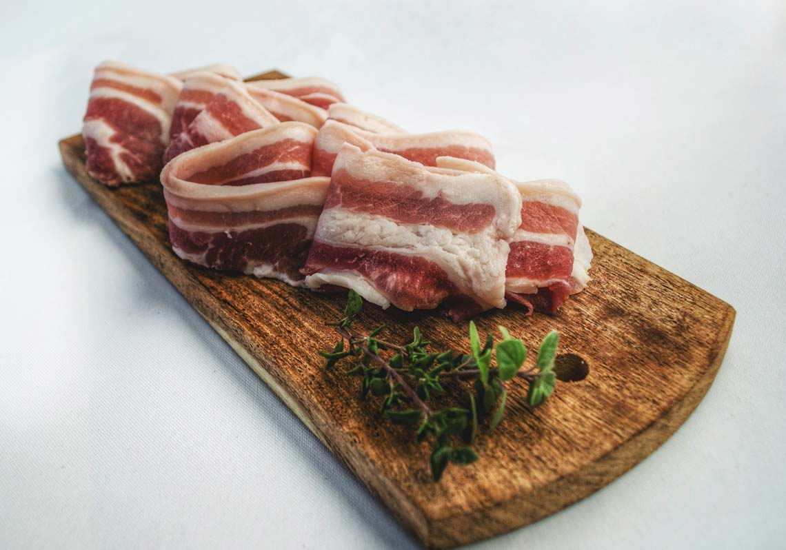
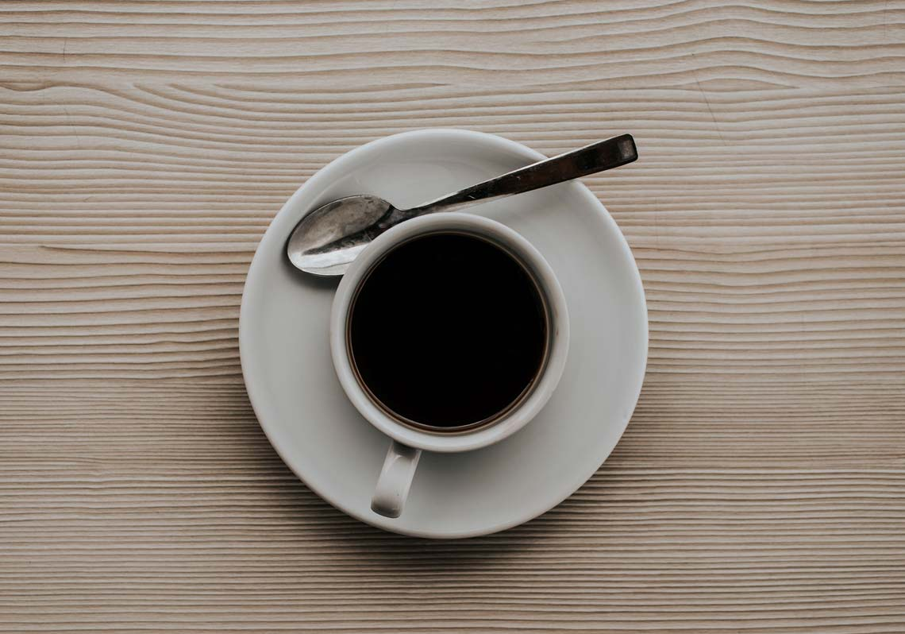

什麼是「間歇性斷食」
間歇性斷食其實並不是一種節食的辦法，那也不是要關注你吃什麼，它關注的是你進食的頻率和時間。所謂間歇行斷食，是一天以24h為基準，那其中會有一段時間不吃東西，把一天要吃的東西集中在另外一段時間來吃，所以你經常會聽到一些間歇行斷食的方法，比如說168、186、204。斷食的時間和進食的時間加在一起是24h。
平時我們不斷進食的情況下我們的身體依靠葡萄糖作為能量來時用的，當我們吃的比較多的時候，那我們的葡萄糖就會變成脂肪儲存在體內，儲存的脂肪燃燒之後產生的就是酮體，只要在斷食，脂肪就會有燃燒，這是非常自然的一個狀態。我們要做的就是把斷食的時間稍微的延長一點，那這種延長其實就是間歇行斷食。
間歇性斷食的益處
第一個最大的好處肯定是減肥，斷食的時間裡身體會自主的燃燒脂肪，如果長期堅持的話，間歇行斷食是能夠幫助你減脂的非常明顯的一種手段。
第二個如果你已經有糖尿病，前期有2型糖尿病，想要逆轉胰島素抵抗，間歇行斷食是可以幫助到你的，因為進食的時候我們的血糖會上升胰島素會分泌，如果有意識的控制只在一段時間內吃東西，可以很好的控制血糖，胰島素抵抗有可能被逆轉。
另外，在斷食的時候人們的研究發現此時頭腦會特別的清醒，特別容易專注於手頭的工作， 甚至連記憶力都有所提升，這是因為在斷食的時候處於一種警覺的狀態，而且酮體是大腦喜歡的一種能量來源，是更清潔的一種能量來源，所以酮體會幫助大腦更高效的去運轉。
第四個好處是斷食可以幫助你促進細胞的自噬，將身體裡垃圾細胞分解掉，回收利用掉，幫助我們的身體運轉更加良好。
如何開始斷食
很多人說，斷食不是很簡單嗎，不吃東西就好了。事實上我們需要關注的是斷食的前一頓要吃些什麼才能幫助你的斷食更加的順利。
不只是膳食纖維，有一點對於新手來說十分的重要，就是一定要吃到足夠健康的脂肪，因為健康的脂肪更能延長你的飽腹感，剛開始還沒適應酮體功能的時候，這些脂肪能夠讓你更容易在身體中產生酮體，依舊讓你整個斷食的過程會變得更加順利。

斷食時能喝什麼
首先特別強調的就是水，因為水能夠幫助我們更好促進細胞自噬，促進新陳代謝整個身體循環的效率。

第二個就是喝咖啡，完全什麼都不放的黑咖啡，黑咖啡中有兩種物質能夠幫助你去促進斷食。第一種就是咖啡因，能夠促進細胞自噬；第二種就是多酚類物質，同樣也是促進細胞自噬，增強新陳代謝，和咖啡類似的就是茶，不管紅茶、綠茶還是花草茶，只要沒有糖分，都可以在斷食的時候去喝。
要斷食多久
最基礎的斷時間是16h，這是最多人使用都在堅持的一種斷食方法，也是比較容易實現的，如果你是非常的新手，或者說是一天6餐還不斷加零食，你可以先嘗試13小時的斷食，慢慢過渡到16h。比如說在前一天晚上8點鐘之前吃完了晚餐之後，到第二天中午12點鐘開始吃有熱量的一餐。
168可以十分的靈活可以在任何時間斷，習慣了之後可以過渡到186也就是18小時斷食，甚至是204，很多人慢慢開始發現早上起來的飢餓感就慢慢消失不見了，就這樣開始慢慢斷食時間一點一點延長，其實這才是最好的狀態，也是身體最適應的狀態。
如何結束斷食
打破斷食的那一餐對我們來講其實真的蠻重要的，很多人在斷食之後掐著表迫不及待的開始吃一頓大餐，這樣會讓消化功能可能沒那麼容易適應，很多實踐者都更加推薦在一段時間的斷食後，先用一些輕食或者一些零食來幫助你的消化系統開始適應進食，然後再去吃一頓正餐，因為腸道健康對我們來講是很關鍵的，是我們整個免疫系統的基石，所以正確的結束斷食對我們整個斷食過程也是十分重要的。